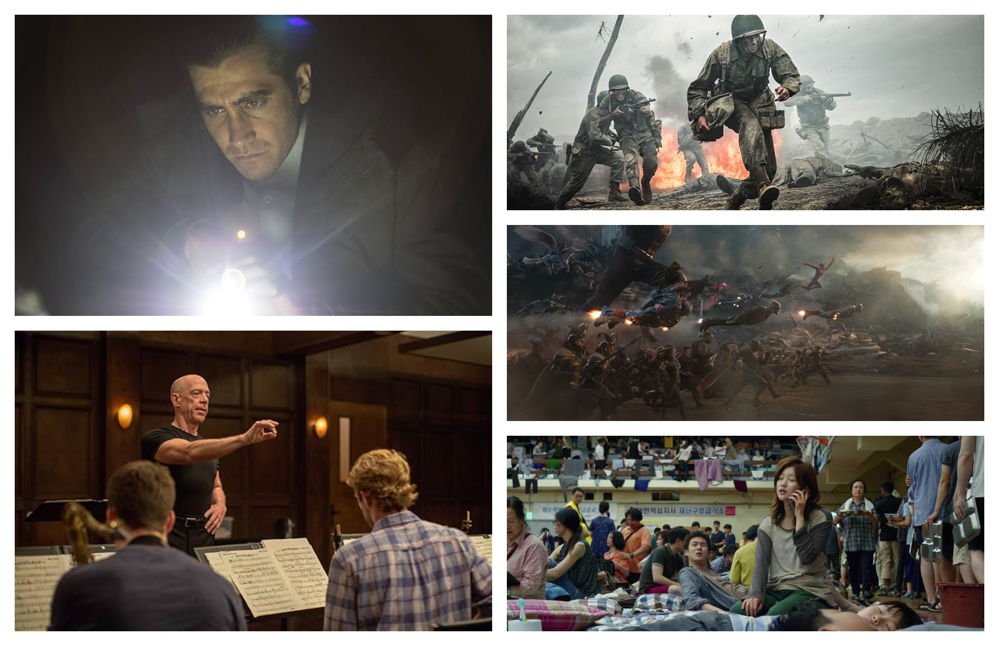
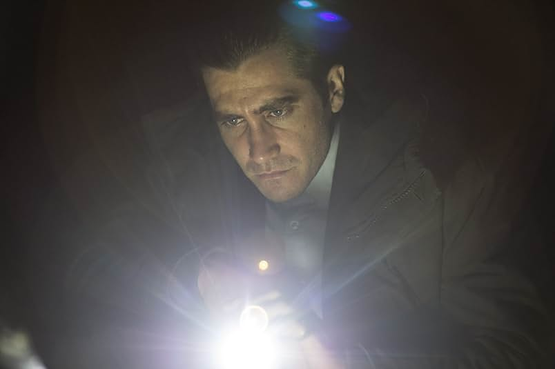
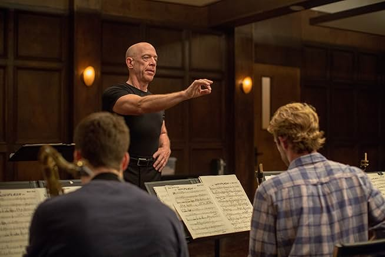
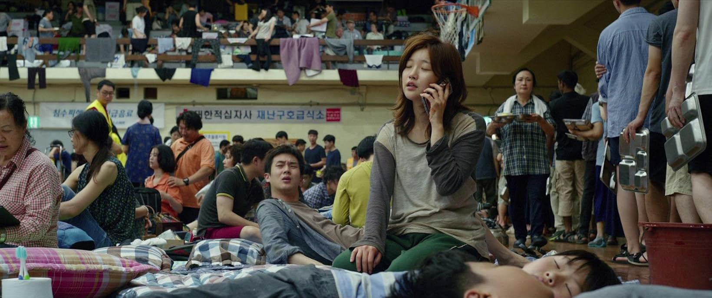

Our favorite movies !
By Emil, Binu, Shishuang.
 Avengers Endgame:Disney; Hacksaw Ridge: Lionsgate; Parasite: NEON; Prisoners: Warner Bros. Pictures; Whiplash: Sony Pictures Classics;There's a strange kind of beauty in returning to films that remind us why we watch movies in the first place. In a culture saturated with sequels, remakes, and streaming fatigue, it's easy to feel like the soul of cinema is lost beneath the surface. But then a film like Whiplash comes along — a tightly wound symphony of obsession and ambition — and it knocks the air out of you. Or Parasite, with its perfectly calibrated layers, peeling back society one twist at a time. These are stories that don't just entertain; they disturb, provoke, and linger. From the scale of Avengers: Endgame — a finale that doubled as collective catharsis — to the raw moral grayness of Prisoners and the wartime valor of Hacksaw Ridge, these films span genre, tone, and origin, yet they all pulse with the same urgency: a need to be seen, to be felt. We don't choose movies just for what they are. We choose them for what they awaken in us.
1.Prisoners
 Photo : Warner Bros. Pictures.Denis Villeneuve's Prisoners is a slow-burning, nerve-shredding descent into the dark heart of justice, and the lengths people go to justify their own. It begins as a missing-child thriller, but soon reveals itself as something deeper and far more unsettling — a philosophical labyrinth masquerading as genre. The story pits two men against the unknown: Hugh Jackman as Keller Dover, a father gripped by primal desperation, and Jake Gyllenhaal as Detective Loki, whose twitchy control barely masks a bottomless unease. Villeneuve doesn't just ask what you would do to protect your family — he asks what it would take to break you, morally, spiritually, irrevocably. Every frame is steeped in a damp, gray dread, Roger Deakins' cinematography capturing a Pennsylvania winter so dense it seeps into your bones. But beneath the bleakness lies something transcendent — a mystery not just of plot, but of faith, guilt, and the human cost of certainty. Prisoners isn't about solving the crime. It's about what we become when we think we already have.
2.Whiplash
 Photo : Sony Pictures Classics.Damien Chazelle's Whiplash is a 106-minute drum solo of obsession, pain, and transcendence — a film that builds like a jazz crescendo and ends in something close to madness or glory, depending on where you're sitting. It's a two-hander masquerading as a character study, with Miles Teller's Andrew — all bleeding knuckles and burning ambition — locked in a brutal pas de deux with J.K. Simmons' Terence Fletcher, the tyrannical jazz instructor whose philosophy of greatness is forged in abuse. Whiplash isn't about music any more than Raging Bull is about boxing. It's about the cost of excellence, the seductive myth of sacrifice, and the line between greatness and self-destruction. Chazelle directs with the taut fury of a conductor chasing perfection, slicing each scene with whipcrack edits and syncopated tension. By the time the film reaches its final sequence — a ten-minute showdown of wills disguised as a drum solo — it has become something mythic: a parable about power, art, and the dangerous beauty of being pushed past your limit. Not quite a tragedy, not quite a triumph — just the rush of someone catching fire.
3.Avengers-End Game
 Photo : Disney.
Photo : Disney.
Avengers: Endgame is not just the climax of a franchise — it's the cinematic equivalent of a myth being carved into modern pop memory. Directed by Anthony and Joe Russo with an operatic sense of finality, the film unfolds as a sprawling elegy, a three-hour orchestration of grief, hope, time, and sacrifice. It's about superheroes, yes, but it's also about endings — about what happens when legends grow old, when gods fail, and when the world must be put back together not by power, but by will. What's astonishing is how intimate it dares to be: Robert Downey Jr.'s Tony Stark, weary and fragile, giving the performance of a lifetime as a man confronting his own ego and mortality; Chris Evans' Captain America, all quiet valor and aching decency, finally choosing a life instead of just a cause. Even amid the galaxy-hopping, time-bending chaos, Endgame finds time for silence, for stillness — and then delivers one of the most rousing, breath-stealing final acts in blockbuster history. It's not just a movie. It's a monument to a decade of storytelling, a farewell that somehow feels both impossibly massive and deeply personal.
4.Hacksaw Ridge
 Photo : Lionsgate.
Photo : Lionsgate.
Mel Gibson's Hacksaw Ridge is a war film carved in paradox — brutal yet reverent, bloody yet redemptive. It tells the true story of Desmond Doss, a Seventh-day Adventist and conscientious objector who saved 75 men at Okinawa without firing a single bullet. But this isn't a pacifist drama that sidesteps violence; it plunges headfirst into it, then dares to ask what courage looks like when you choose not to kill. As Doss, Andrew Garfield delivers a performance of piercing sincerity, playing a man whose quiet moral clarity becomes the loudest force on the battlefield. Gibson directs with his signature fervor — carnage rendered in unflinching detail, faith presented without irony, emotion worn on the film's bloodstained sleeve. The battle scenes are operatic in scale, nerve-shredding in intensity, yet it's the moments of stillness — Doss whispering “Lord, help me get one more” — that elevate the film into something almost spiritual. Hacksaw Ridge is not just a war movie. It's a resurrection story told through mud, fire, and conviction — a portrait of conviction that holds steady in a world built to shatter it.
5.Parasite
 Photo : NEON.Bong Joon-ho's Parasite is a genre shapeshifter and a moral razor blade — a film that begins as a darkly funny con job and curdles, almost imperceptibly, into tragedy. It's about two families, one rich and one poor, circling each other in a social tango that feels increasingly like a trap. But more than class, it's about proximity: how close we can get to power, to comfort, to illusion — and how far we're willing to go to keep it. Bong directs like an architect laying down blueprints for collapse, each shot so precise it feels inevitable, each transition between tones so smooth it's disarming. The Kim family's hustle is both hilarious and heartbreaking, anchored by Song Kang-ho's masterful performance as a father caught between resentment and resignation. What makes Parasite devastating is not just what happens, but how disturbingly understandable every choice is. The house, the rain, the basement — all become metaphors that breathe, swell, and finally explode. It's not a thriller, not a comedy, not a horror film — and yet it's all of them. Parasite doesn't just cross boundaries. It crawls under your skin and shows you the cost of pretending there are none.